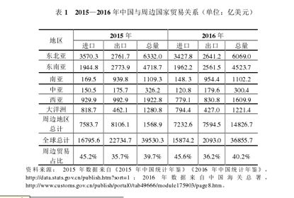
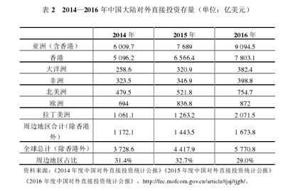
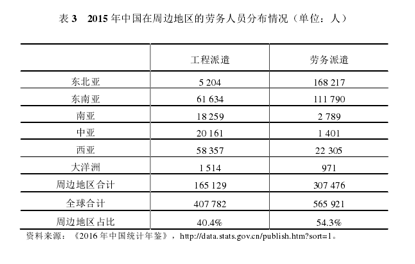
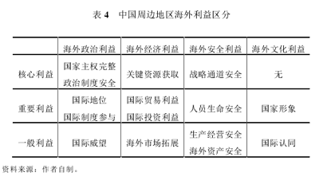

收录于合集
简
凌胜利
外交学院国际关系研究所副教授、中国海外安全研究所高级研究员
【 摘要 】随着“一带一路”倡议的大力实施，中国与周边各国的联系更加密切，中国在周边地区的海外利益也显著增加。无论是经贸关系还是境外投资，抑或是人员往来，中国在周边地区的海外利益都日益凸显，周边地区在中国海外利益中的分量也与日俱增。但是，周边地区海外利益面临政治、经济、社会和安全四大风险，而且在海外利益维护方面面临不干涉内政与建设性影响的“原则困境”、安全问题频发与海外军事支援受限的“力量困境”、依法保护与法律缺失的“法律困境”。对于周边海外利益的维护，要划分海外利益的层次与领域。总体上，海外利益可以划分为核心、重要、一般三个层次，同时可以区分为政治、经济、安全、文化四大领域。对于不同层次和领域的海外利益，要针对性地运用政治、经济、外交、军事、法律五大手段，积极建立国家、企业、社会和个人多元力量参与的“四位一体”海外利益维护模式。
【 关键词 】周边地区；海外利益；周边外交；周边安全；大周边
纵观近年来国内有关海外利益的研究，主要集中在三个方面：一是对海外利益的概念进行辨析，分析其主要内涵，区分其与国家利益的关系；二是对海外利益保护以及相关国际经验进行总结与分析；三是探讨目前中国维护海外利益面临的挑战、风险和对策。但是，对于中国在某一地区、某一领域的海外利益研究则相对较少，而且，对海外利益的研究更多是探讨海外经济利益，对海外安全利益的研究比较有限。
随着中国国家实力的增强和国际活动的增加，中国的周边概念已经不再仅仅局限于传统的周边地区，学术界出现了 “大周边” 的呼声，以区别于以往的 “小周边” 。袁鹏认为，当前中国需要树立真正意义上的“大周边”意识，超越邻国、东亚、亚太等概念。“大周边”包括内环、中环和外环三个部分，涉及亚洲、非洲、欧洲、美洲甚至极地地区。这种大周边在空间上非常广阔，几乎囊括了世界上所有的大洲。与袁鹏的观点有所不同，另一些学者所主张的“大周边”在空间范围上相对小一些，基本上是对目前中国传统周边范围的适度拓展。祁怀高、石源华认为，“‘大周边’的概念需超越传统的地理范围界限，涉及东北亚、东南亚、南亚、中亚、西亚和南太平洋地区六大‘板块’”。但是对于西亚是否应该属于大周边，有学者持不同意见。陈向阳指出，“中国的周边基本涵盖东北亚、东南亚、南亚、中亚与南太平洋五大板块”。尽管西亚由于历史、宗教、地理等原因与中国的交往不如其他传统邻国频繁，但随着近年来中国与西亚各国联系的不断紧密，特别是“一带一路”倡议向西发展，西亚日益成为中国“大周边”的一部分。
综上所述， 大周边与小周边的区别主要在于是否要将西亚、南太平洋地区纳入周边地区范畴。在本文中，周边主要是指超越传统邻国概念但又有所限定的“大周边”，主要包括东北亚、东南亚、南亚、中亚、西亚与南太平洋六大“板块”， 总体上可理解为亚洲和大洋洲。
中国与大周边地区的国家大多交往密切，与各国贸易关系紧密，投资不断增加，人员往来日益频繁。近年来，随着“一带一路”、亚投行等合作框架的确立，中国在周边地区的海外利益不断增加，这使得如何保护中国在大周边地区的海外利益更加迫切。加之中国在周边地区拥有重要的政治关系、安全关切、贸易伙伴、投资伙伴、人文伙伴等，这些都决定了维护周边地区海外利益的重要性。为了有针对性地提出维护中国周边海外利益的对策，需要对中国在周边地区的海外利益进行全面系统分析，以便更有效地促进中国周边战略的实施。
周边地区海外利益的主要构成
关于海外利益的构成，学术界的既有研究分歧不大，大体划分为政治、安全、经济、社会等方面，但主要聚焦于经济利益和人员安全。在对周边地区海外利益的构成进行分析之前，首先需要明晰海外利益的概念。
纵观近年来国内关于海外利益概念的探讨，可以归纳为三种观点。第一种观点侧重 从空间上界定海外利益，认为中国海外利益实际上是国境之外的国家利益， 属于国家利益的组成部分；第二种观点在 承认海外利益境外性的同时，也承认海外利益有国家、法人、个人等不同主体之分 ； 第三种观点更突出 海外利益的合法性，从海外利益的形成来看，主要通过中国政府、企业、社会组织和公民在日益紧密的国际联系中逐渐形成， 空间上体现为境外性，合法性方面主要考虑国际合约形式。由此可见，对海外利益概念的界定，主要分歧在于海外利益的主体是仅局限于国家，还是涉及企业、社团、甚至个人等非国家行为体，体现了空间的境外性、主体的多元性、规则的合法性、形成过程的联系性等特点。
不过海外利益的认知具有动态性，汪段泳认为，随着海外利益在国家利益中的重要性不断提升，对海外利益的认识逐渐从局限于经济利益的“低政治”上升为国家核心利益的“高政治”，对维护海外利益的手段也日益受到国家重视。简而言之， 海外利益的界定及其战略地位，与各国的实力及身份定位密切相关。海外利益概念的界定也关系到国家维护海外利益的战略选择。 对海外利益的概念界定实际上 也影响了海外利益在国家政策中的地位。 随着海外利益的不断拓展，中国对海外利益的认知也不断调整。“以现实建构主义视角分析，中国海外利益的内涵是权力变迁因素和国际社会规范共同作用的产物。”
有关中国海外利益的构成，目前学术界存在多种看法。陈志武认为，“中国的海外利益包括人员生命安全、财产安全、资源供应、海外市场拓展等四个方面”。这种观点只考虑 海外经济利益和人员安全。 唐昊认为，中国目前的海外利益可以划分为四类：国家安全利益、海外公民权益、海外商业利益和国际社会认同，这种观点主要是 从问题领域来考虑海外利益的构成。 陈晔认为，“海外利益基本内涵分为海外经济利益、海外政治利益、海外安全利益、海外文化利益和海外资源利益”，同时 比较突出海外资源利益的重要性。 曾卓认为，中国海外利益从内容上可分为海外经济利益、海外安全利益、海外政治利益和海外文化利益。郎帅认为，海外利益包括海外经济利益（主要表现为进出口贸易、对外投资和国际金融三类），海外政治利益（主要指中国所享有的国际地位、获得的国际认可以及赢得的国际支持），海外人员安全，海外国家形象，国际战略通道安全。
学者们对海外利益的认知分歧主要体现在两个方面： 一是海外利益的主体是仅局限于国家，还是包括国家、企业、个人等多元主体；二是海外利益的领域构成主要包括政治、经济、安全、文化四个方面，还是涉及其他领域。 在本文中， 海外利益可理解为包括国家、企业、个人等多元行为体在政治、安全、经济、文化等诸多领域中的境外利益。 中国在周边地区的海外利益主要包括中国政府、企业、社会组织、公民等在周边地区所存在的政治、安全、经济、文化等利益。为了更为直观地理解中国周边地区海外利益的重要性，本文主要选取 中国与周边地区的贸易、中国在周边地区的投资 和 中国与周边地区的人员往来 ， 来分析中国在周边地区的海外利益，重点关注海外经济利益和海外安全利益。 之所以选择这三组数据来分析中国在周边地区的海外利益，主要是 基于海外利益的主要构成以及相关数据的可量化程度。 一是 海外利益所涉及的政治利益、文化利益相对而言难以用数据测量，而经济利益和人员安全则相对可以量化； 二是 目前中国在周边地区的海外利益主要还是以经济利益和安全利益为主，而安全利益主要是指非国家行为主体的安全。涉及国家安全利益的虽然可以视为海外利益，但实际上其维护举措往往比维护海外利益具有更高的战略层次，这与维护海外利益以算“经济账”为主有所不同。
第一，从中国与周边地区各国的贸易来看（表1），周边地区占有重要地位。 根据中国海关总署、中国统计年鉴 2014、2015、2016 年的数据可以发现，无论是进口、出口，还是总额，周边地区在中国的对外贸易中都占据重要地位。2014 年，中国与周边国家贸易的进口、出口、总额分别占全球对外贸易的 47.4%、35.6%、41.0%；2015 年，这一比例分别是 45.2%、35.7%、39.7%；2016 年，这一比例分别是 45.6%、36.2%、40.2%。由此可见，周边地区成为中国海外经济利益的重要区域。

第二， 从中国对外投资来看（表 2）， 周边地区（主要指亚洲和大洋洲）是中国海外利益的重要区域。 近年来，中国对外投资增长迅速，随着由“中国制造”向“为中国制造”转型，中国的境外投资还会不断增长。由于在中国对外投资中，香港也被统计在内，而香港在2014—2016 年占中国对外投资存量的比例在 57%—60%之间，扣除香港因素，可以发现中国对周边国家的投资占 30%左右。除 2016 年对周边国家的投资存量少于拉美地区外，其他年份周边国家都居中国对外投资存量的首要位置。而且随着“一带一路” 倡议的实施，中国在周边地区的投资还会有所增加。

第三， 从周边地区的劳务人员分布来看（表 3）， 周边地区是中国劳务输出的重要区域。 根据《2016年中国统计年鉴》的数据，无论是工程派遣还是劳务派遣，周边地区的劳务人员都占中国在全球劳务人员的 40%以上。而且劳务人员只是中国人在境外活动的一部分，如果算上庞大的境外旅游人员，这一比例可能会更高，因为周边地区是中国公民出境活动的主要区域之一。例如，2016 年中国公民出境旅游人数达 1.22 亿人次，前十位的出境目的国分别是泰国、日本、韩国、美国、马尔代夫、印度尼西亚、新加坡、澳大利亚、意大利、马来西亚，其中周边国家占八个。随着海外公民活动的不断增多，海外公民保护已成为中国海外利益保护的重要内容，周边地区的海外公民保护更是重中之重。此外，海外华侨华人利益的维护也不时考验着中国维护海外利益的能力。改革开放以来，华侨华人在全世界的分布不断扩大，但周边地区始终是中国海外华侨华人分布最多的地区，这对中国维护海外利益是不小的考验。

周边地区海外利益面临的四大风险
（一）政治风险
中国周边海外利益的政治风险是指周边行为体特别是国家所实施的政策对中国周边海外利益造成的冲击。对于维护周边地区的海外利益，政治风险主要体现在三个方面。 一是周边国家政局动荡。 中国周边地区国家不乏老人政治、强人政治，这些国家的政治转型面临诸多不确定性，一些国家的民主化进程冲突不断，这对中国的海外投资、企业的海外经营等构成了挑战。例如，中国在泰国、缅甸的投资就曾因政局动荡受损。 二是周边国家的政策调整。 一些周边国家的相关贸易、投资等制度并不健全，甚至不乏朝令夕改的情况，这使得中国在这些国家的海外利益很难得到比较稳定的保障。周边不少国家在劳工、土地、融资、财政、产业政策等方面的规则不健全、不连续，执法随意性大。在多边贸易、投资等机制难以有效保障中国周边海外利益的情况下，如何提升双边制度的保障力度是中国海外利益保护的重要手段。 三是周边一些国家对华不友好态度。 周边一些国家对中国的欢迎与戒备态度并存，“中国威胁论”在某些国家不乏市场，造成其态度不友好，进而损害中国的海外利益，特别是损害一些投资周期较长、固定投资大、投资回报慢的海外利益。
（二）经济风险
周边地区存在的经济风险也对中国的海外利益构成了挑战，这些经济风险涉及商业运营环境、商业竞争、商业制度等诸多方面。 一是商业运营环境有待改善。 “一带一路”沿线国家的营商环境排名多处于 100 名以后，经营环境风险整体较高。而“一带一路”沿线大部分国家都属于中国周边地区，这也意味着中国周边地区的营商环境普遍欠佳，营商风险不可低估。 二是经济危机的潜在风险。 周边国家大多在产业、投资、金融等方面存在制度建设不足的问题，因此这些国家都存在着较大的潜在经济风险，如汇率波动、产业调整等，这些风险对中国海外利益的冲击不可忽视。尤其值得注意的是，一些周边国家由于经济结构单一、对外依赖性较强等原因，经济稳定性较差，这使中国在这些国家的长期投资面临较大的不确定性。中国在海外的投资因不了解当地劳工、税收等一系列国内法律问题而经常碰壁，如非法罢工已成为海外中资企业的头疼问题，如何加强投资保护，谨防投资冒进已成为维护海外利益的重要内容。 三是大国经济竞争的影响。 随着中国崛起和亚太地区战略地位的上升，大国在中国周边地区的经济竞争也更加激烈。例如，中泰铁路的一波三折就与日本的介入有关，中国在印尼的高铁项目也面临着日本的竞争，中美在地区贸易规则上的激烈竞争也此起彼伏。目前，虽然“一带一路”建设倡导共商、共建、共享的理念，但与主要大国的共识还较少，彼此间的经济较量在未来较长时期内依然会延续，中国海外利益深受大国竞争影响也会成为常态。
（三）社会风险
中国在周边地区的海外利益维护有赖于周边国家的社会认同与支持。尽管中国与相关国家政府能够就投资、经贸等达成较多共识，签订相关合作文件，但维护中国海外利益与具体利益所处的外部环境密不可分，这种外部环境不仅包括周边国家对中国的认同感，还涉及中国企业在当地社会的影响、中国人与当地人的关系、当地的社会生态等。从海外利益保护的角度看，社会风险对海外经济利益、海外人员安全、海外国家形象等具有重要影响。中国周边地区海外利益所面临的社会风险主要源自三大因素。 一是中国与周边国家的宗教、文化差异，影响着周边国家对中国的认同。 尽管周边国家与中国在历史上交往密切，但文化与宗教上的差异始终影响着彼此的相互认知，相互了解有限。 二是中国与周边国家的政治制度差异。 虽然冷战已经结束，但意识形态因素在中国与周边国家的关系上依然发挥着影响。中国是目前为数不多的社会主义国家之一，这使得一些周边国家与中国交往时心存戒备，因政治制度的差异，中国在周边地区的许多投资问题很容易被上升到国家安全层面，受到诸多限制。例如，中国能源企业在海外的活动常常被认为是受中国政府操控而非市场行为。海外利益的主体包括国家、企业、社会等多元主体，因此，为了避免一些国家或其他行为体将中国的海外利益笼统地视为中国的国家整体利益，需要推动海外投资主体的多元化，鼓励民企“走出去”。 三是中国企业的行为影响周边国家的社会认同。 中国企业在周边地区的行为直接影响周边国家对中国的社会认同。因而中国企业的行为是否尊重当地法律、习俗，中国企业是否肩负起相应的社会责任都是影响海外利益的社会风险。
（四）安全风险
中国周边地区的投资环境也存在不少安全风险，一些地区和国家因民族、宗教等矛盾而冲突不断，甚至爆发战争。中国在周边地区的海外利益所面临的安全风险主要有四种类型。 一是周边地区发生战争 。殷鉴不远，中东地区一些国家的战乱频繁，对中国的海外利益造成了重大影响。尽管中国成功完成在叙利亚、利比亚等国家的撤侨行动，但海外资产的损失还是非常惨重。未来，为了规避、减少战争或武装冲突对海外利益的冲击，中国在战前、战中、战后三个环节均应有所举措。 二是周边地区的局部武装冲突 。周边一些国家内部存在局部武装冲突，有些甚至是历史难题，例如阿富汗的塔利班问题、缅北的武装冲突问题、印巴冲突问题，这些都对中国在这些国家的海外利益具有重要影响。特别是中国企业在这些武装冲突地区或毗邻地区进行投资时，如何规避安全风险已成为一项需要认真思考的议题。 三是恐怖主义活动 。中国周边地区的恐怖主义活动非常频繁，中亚、西亚、南亚、东南亚等地区的恐怖主义活动从未停息，对中国的海外利益造成巨大威胁，尤其是在人身安全方面，针对我海外人员的绑架活动时有发生。 四是违法犯罪活动 。中国周边各国的社会治理能力参差不齐，一些国家的违法犯罪活动频繁，甚至还存在一些跨国犯罪问题，这些对中国海外利益也是一大挑战，此前的湄公河惨案就属此类。
维护周边地区海外利益的三大困境
（一）不干涉内政与建设性影响的“原则困境”
长期以来，中国奉行独立自主的和平外交政策，坚持以和平共处五项原则来处理对外关系，其中“不干涉内政”原则对维护中国海外利益产生了重要影响。中国周边绝大多数国家都处在民族国家阶段，对主权问题尤为重视，且极为敏感。在过去很长时期，中国与周边国家的经济、人员交往较少，而且大多是在 “高政治”领域 发展国家间关系。但是随着中国在周边国家的海外利益日益增加，中国与周边国家的互动主体也呈现国家、地方政府、企业甚至是个人的多元化发展趋势，彼此间在 “低政治”领域 的互动也日益频繁， 因而对“不干涉内政”原则的理解也应与时俱进，因为影响别国对华态度和不干涉内政并不冲突。 一是中国与周边国家的交往从“高政治”领域向“低政治”领域拓展， 主权问题的相关性和敏感性呈下降趋势。 二是中国在周边国家的海外利益不断增多， 如何维护企业和个人正当合法的海外利益，是中国的国家责任所在，这既需要加强与周边国家的战略沟通、政策协调，真正实现外交为民，也需要外交、外事部门重新审视不发声、不抢先、不介入的传统态度，更加积极有效地维护海外利益。“不干涉内政”是 一项原则，主要针对纯属一国内部事务而言，但海外利益维护却涉及很多具体事务，中国是主要的利益攸关方，这就需要在“不干涉内政”原则的指导下灵活应对，以便更有效地维护中国的海外利益，实现国家间的合作共赢。 三是维护海外利益缺乏健全的法律法规，这就需要加强双边或多边的政策沟通，不干涉内政不应该成为不作为和不承担责任的托辞。 尊重对方主权和维护中国的海外利益并不冲突，两者可以协调、共存。 四是国际规范发生变化，人的安全等因素日益受到重视， 这需要作为一种规范的“不干涉内政”原则进行适当变革。例如，在一些战乱国家或治理能力较低的国家，如何维护中国海外公民的安全，需要中国增强对相关国家的政策影响。尽管不干涉内政是中国对外政策的一项重要原则，但新时代对其内涵应有新的理解。不干涉内政并不等于不可以寻求对其他国家的政策施加影响，在维护海外利益问题上，中国完全可以依据相关国际规则、双边规则对自身的海外利益进行合法、合理的维护，对于一些国家违背相关规则、条约等损害中国海外利益的行为，可以对其政策施加影响，发挥建设性影响。在一个各国联系日益紧密的全球化时代，绝对主权越来越受到限制。对于中国在周边地区不断增加的海外利益，如何寻求不干涉内政和建设性影响之间的平衡尤为重要，进而才能实现本国利益与他国利益的协调，在开放的国际社会实现合作共赢。
（二）安全问题频发与海外军事支援受限的“力量困境”
随着中国在周边地区海外利益所遭遇的安全风险不断增多，是否要进行海外军事支援也成为学术界讨论的焦点之一。但是，出动军队来维护海外利益面临诸多限制因素。 一是中国向海外派遣军队维护海外利益缺乏相应法律规定。 海外军事行动需要法定授权，依法活动，这相应需要对现行的法律进行必要的补充、修订或进行相关立法。 二是中国在周边地区缺少军事基地，使得派遣军队维护海外利益受到时间、地点等限制，海上部分可以依靠海军公海巡航，陆上则无法派遣军队。 利比亚撤侨也反映了中国军队在维护海外利益方面的短板，有必要建立专门的海外利益维护力量。为了解决周边地区海外利益的安全风险与军事支援之间的“力量困境”，目前可以采取 四种措施 。 一是 海外利益保护的私营化。面对日益严峻的安保问题，海外中国企业和公民日渐依靠市场来满足自身的安全需求，选择国内外私营安保公司来获得安保服务。在政府海外安保受到诸多限制的情况下，通过市场方式来运作海外安保可以成为重要路径。 二是 可以开展警务合作与警务外交。警务外交兼具国际司法、执法与外交三重性质的独特外交形式，具有硬性功效、协调本质、责任延伸与现时保护四个特征，正在成为中国海外利益保护的有效手段。相对于动用军队开展境外活动而言，警务力量可行性更强，而且中国近年来也开始对外输出警务力量来维护海外利益，如湄公河联合巡逻，但总体数量还不多，大批量的国际化警察培养尚需时日。 三是 可以尝试建立一些海外军事基地，增强对海外利益及时进行军事保护的能力， 如吉布提保障基地的建设。 四是 通过国际合作来增强海外利益的安全保障能力。中国可以通过与其他国家不断加强安全合作来提升海外利益的安全保障能力，弥补力量投射和法律限制等不足，如在公海共同打击海盗。总体而言，中国海外利益面临的安全问题多数可以通过私人安保、国际合作等方式解决，只有少数需要进行军事支援。
（三）依法保护与法律缺失的“法律困境”
对于周边地区海外利益的保护，很多专家都建议要依法保护，要合理利用相关国际规则。遗憾的是，中国在周边地区的海外利益保护面临着法律困境。 一是一些多边国际规则对于中国在周边地区维护海外利益并不适用， 如多边贸易保护协定不少，但多边投资保护协定效力有限。 二是中国与周边国家分别签署相关双边协定颇费周折，也比较困难。 因为中国与周边许多国家在贸易、投资等海外利益方面存在不对称性，周边国家认为签订协定主要是保护中国的海外利益，属于单方面保护，因而积极性不高。 三是国际法的国内适用问题。 在海外利益维护问题上，尽管存在一些国际规则、条约等可以援引，但是也面临着在周边国家国内的适用问题，因为一些国家未能实现国际法的国内化，有法不依、有法难依的现象时有发生。四是法律执行的困难。中国的海外利益即使诉诸法律手段进行维护，也存在司法程序过于漫长、法律维护成本过高、专业法律人才缺乏等问题。总之，尽管法律手段可以成为中国海外利益保护的重要手段，但是面临诸多困境，这需要政府组建专业的海外利益维护法律机构和团队，降低企业、个人的法律维权成本。
“四位一体”：维护周边地区海外利益的模式
中国海外利益的保护还处在起步阶段，需要借鉴其他国家的有益经验。英国曾经凭借强大的海上力量为其海外利益保驾护航。美国则通过法律、外交、国际机制、军事力量和非政府力量等多种方式共同维护海外利益。印度运用双边和多边国际合作、对外援助、军事手段、民主价值观等观念性力量及民间力量保护海外利益。也有学者结合当前中国的发展阶段，研究崛起过程中的海外利益维护，比较美国、日本、印度的经验供中国参考。甄炳禧则比较全面系统地总结了西方国家维护海外利益的若干手段，主要包括外交手段、海外保险机制、企业本土化等。
美国、印度等国的海外利益保护对中国具有借鉴价值，但也不能完全复制。关于中国维护海外利益的手段，学者们存在不同见解。汪段泳认为 中国可以采取国际法赋予的外交工具、国际制度、国际责任和军事措施四种手段维护海外利益。 其中履行“国际责任”的方式主要是通过对外援助等手段来增加国际认同，提升国际权威。陈志武认为 中国应该主要依靠法律手段来保护海外利益 ，维护现有的国际秩序。其理由在于，与英美基于硬实力维护海外利益相比，当今时代国际规范的不断完善使中国采取软实力维权更为适宜。李志永认为 中国可以利用警务外交来维护海外利益。 这实际上是通过柔性或隐性硬实力输出的方式来加强海外利益维护，但是从目前来看，中国在这方面的作为并不多。因为这取决于中国国际警务力量建设、国家间关系等多重因素。也有学者认为 政府主导型的海外利益保护机制存在资源有限的问题，需要拓宽海外利益保护思路，充分利用行业协会、华人华侨社会网络和民间组织，构建中国海外利益保护的社会机制，实现国家力量、社会力量的相互补充。 当然，中国的海外利益维护手段无疑需要采取多种方式、多种力量。其中，国家在国际机制、国家关系、企业能力、国家能力和国家形象五个方面的努力尤为重要。也有学者指出， 从长远来看，中国海外利益维护的重心不是外交、法制、军事等单一路径，而应基于权力、制度、文化三大维度构建海外利益维护战略。 总之， 中国海外利益的维护手段大体包括政治、经济、外交、法律（国际制度）、军事五大手段，涉及双边与多边，参与主体包括国家、企业、社会和个人，针对不同的海外利益采取何种手段应该有所区分。
总体而言，上述关于维护中国海外利益的研究相对比较笼统，缺乏针对中国在不同地区、不同类型的海外利益的专门分析，这就使得 对中国的海外利益进行层次性区分 十分必要。张曙光将海外利益分为核心、重要和边缘三个层次。其中，核心海外利益是国家安全利益的延伸，重要海外利益是国家对外发展利益的延伸，边缘海外利益是国家对外文化利益的延伸（即文化软实力）。这种区分实际上将海外利益分为安全、发展和文化三个层次。但是如何对海外利益的重要性进行区分，陈伟恕提出了六条原则：（1）重要性原则；（2）紧迫性原则；（3）影响力原则；（4）控制力原则；（5）收益与成本比较原则；（6）风险度原则。这六大原则对于划分海外利益提供了指标体系，可以为海外利益的层次划分提供重要参考。
基于上述两位学者对中国海外利益的层次划分以及中国周边地区海外利益的类型，结合近年来中国政府对国家利益的层次区分，本文尝试对中国在周边地区的海外利益进行更为细致的分类，即对不同问题领域的海外利益进行层次划分，从而能够采取更具针对性的措施。2011 年发布的《中国的和平发展道路》白皮书明确了中国的六大核心利益，分别涉及国家主权、国家安全、领土完整、国家统一、中国宪法确立的国家政治制度和社会大局稳定、经济社会可持续发展的基本保障，基本是主权、安全、发展三个方面。 参照中国在周边地区的海外利益，可以区分为核心、重要、一般三个层次。一是核心海外利益。 核心海外利益直接涉及国家的主权、安全、发展利益，具有较长影响周期。在海外政治利益方面主要是国家主权完整、政治制度安全；海外经济方面则是关键资源的获取，事关中国经济社会的可持续发展；海外安全方面主要是战略通道安全，对于当前对外贸易依存度居高不下的中国而言，战略通道对中国海外贸易和海外利益都至关重要；在海外文化利益方面基本不涉及核心利益。 二是重要海外利益， 尽管不直接涉及国家核心利益，但影响国家维护核心利益的能力，一般具有中短期影响。海外政治利益方面主要是国际地位、国际制度参与；海外经济利益主要是国际贸易利益、国际投资利益，随着中国对外投资的增加，国际投资在海外经济利益中的重要性也会逐渐上升；海外安全利益则主要是人员生命安全（主要是指相对零散的人员安全，如果是因战乱而波及大量海外人员安全，则升级为核心海外利益），海外文化利益方面则是国家形象。 三是一般海外利益， 对国家核心利益影响有限，但对非国家行为体的海外利益影响较为明显。海外政治利益方面是国际威望；海外经济利益方面是海外市场拓展；海外安全利益方面是生产经营安全、海外资产安全；海外文化利益是国际认同（表 4）。

对于海外利益的维护，基本上可以采用五种手段： 一是政治手段 ， 主要通过领导人沟通、政治交往等方式进行； 二是经济手段 ， 通过经济谈判、经济合作、经济制裁或经济援助等方式进行； 三是外交手段， 通过外交谈判、国际合作等方式进行； 四是法律（制度）手段， 通过诉诸相关国际制度、双边条约等方式； 五是军事手段， 动用武装力量进行威慑、作战等，警务力量不在此列。
一般而言，对于诸多手段的运用还需要遵循以下几方面的原则。 一是只有涉及核心利益才采取军事手段，但为了营救中国在海外某地区或国家大量人员因危机状态而遭受迫在眉睫的安全威胁， 可以动用军事手段， 如利比亚、叙利亚撤侨。 二是对于不同类型的海外利益要进行针对性保护， 如海外政治利益主要以政治手段和外交手段为主，辅之以经济手段；海外经济利益则主要以经济手段和法律手段为主，政治和外交手段可以成为有力支撑；安全利益主要以政治手段、外交手段、军事手段为主；海外文化利益主要以政治、外交手段为主。 三是海外利益保护在以国家为主导的同时，也应该鼓励企业、社会和个人积极维权，打造国家、企业、社会和个人海外利益维护多元力量。 国家是海外利益维护的主导力量和坚强后盾，在涉及核心海外利益方面，国家可以发挥主导作用，积极采用政治、外交、军事等手段。与此同时，国家维护海外利益不仅体现在应急性，还要积极支持企业、社会等海外利益维护主体的能力建设。企业是海外利益的直接相关方，也是海外利益维护的重要主体。企业维护海外利益主要涉及重要海外利益和一般海外利益，可以通过经济手段、法律手段来进行。但企业在海外维护自身利益的同时，也要注意尊重所在国的法律，合法经营、合法维权。随着中国海外利益的不断拓展，仅靠国家公权力和企业力量的投入还不够，难以满足日益复杂的海外利益维护诉求，因此需要作为润滑剂的社会力量的加入。维护海外利益也需要尽可能动员海外社会力量，如海外商会、企业家协会、行业协会。个人是海外经济利益和海外安全利益的重要主体，也是海外利益维护的第一道防线，可以利用相关法律积极维护或争取社会团体和国家的支持。 总之，维护海外利益是一个系统工程，要积极构筑维护海外利益四大领域、三个层次、五种手段、四大力量的“四位一体”模式。 但是需要注意的是，维护海外利益并非都能立竿见影，因为这不仅涉及国家间的互动，也涉及具体海外利益的属性与现实困难。因此，在维护海外利益方面，加强制度化建设是必由之路。
结束语
周边地区是中国海外利益的重要地区，随着“一带一路”倡议的实施，中国在周边地区的海外利益也不断增多，加强对周边地区海外利益的维护十分必要。对于维护周边地区的海外利益，不仅要聚焦传统周边地区，还要顾及南太平洋、西亚这样的大周边。总体而言，中国在传统周边地区的海外利益较多，但在大周边的一些国家的海外利益也不断增加。另外，对于维护周边地区的海外利益， 要确立较为清晰的维护模式，对海外利益进行层次划分和类型区分，有针对性地运用各种手段，积极发挥国家、企业、社会、个人的不同作用。 此外，周边地区的海外利益不仅存在政治、经济、社会与安全四大风险，也面临着原则、实力与法律三大困境。在“一带一路”倡议和“走出去”战略大力推进的背景下，中国维护周边海外利益也将面临更为复杂的挑战，以多边与双边相结合的方式来维护周边地区的海外利益可以成为重要选择，实现多边促双边、双边带多边的合作。“一带一路”倡议的实施必须重视海外利益的维护，这不仅是各种生产要素走出去，也是中国如何拓展地区影响力的重要途径，为此，可以尝试在“一带一路”框架下制定贸易、投资相关规则，为中国维护周边地区的海外利益提供制度性保障。
注：完整内容及参考文献可参看原文。
文章来源： 《国际展望》 2018年第1期
筛选：诗夏 编辑：诗夏 敖遊